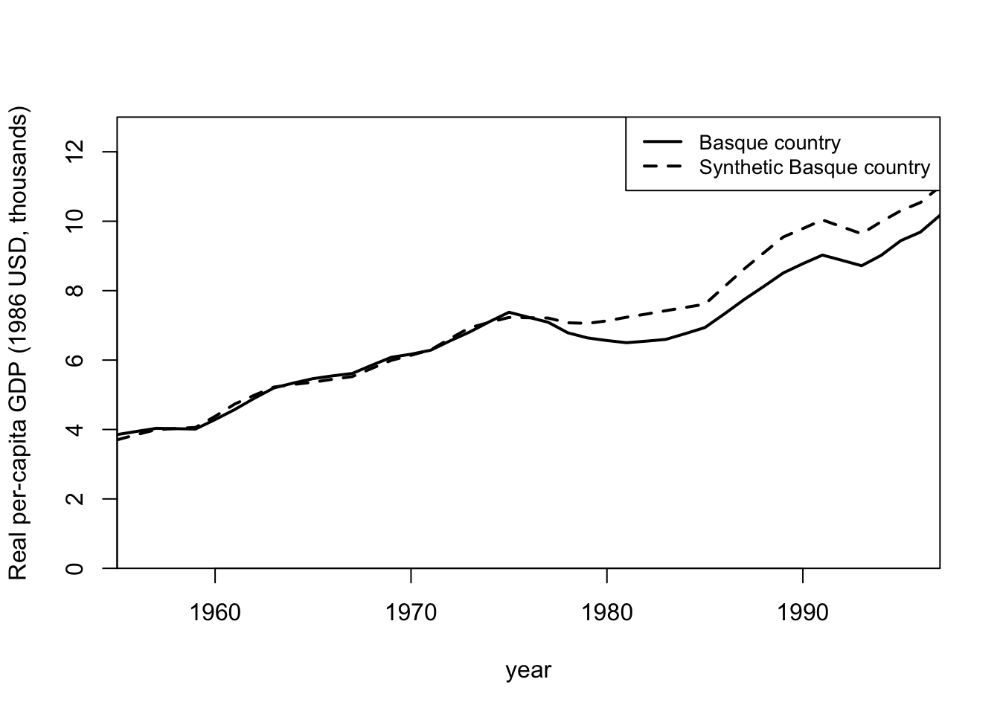
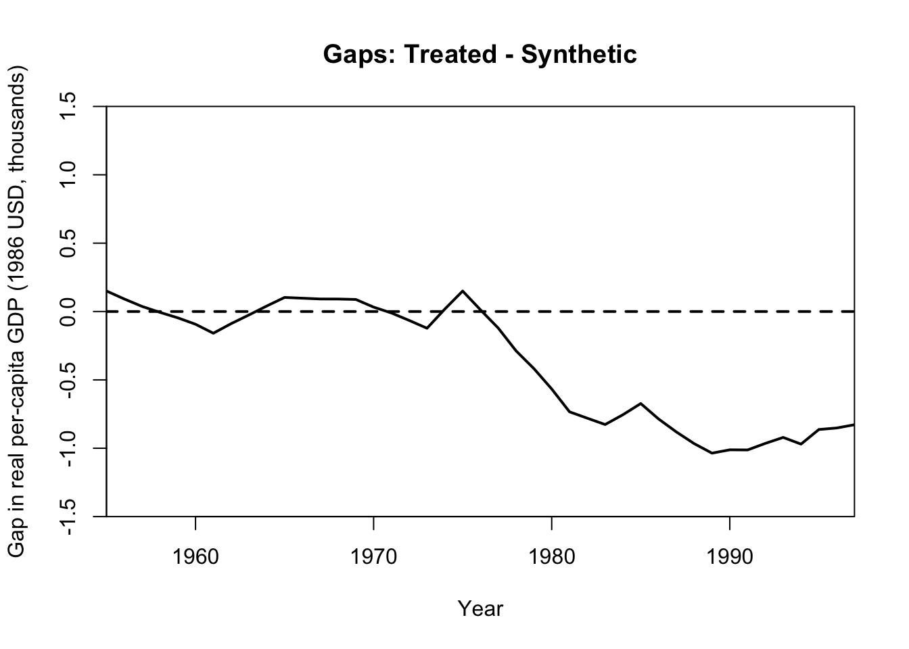

Code
library(Synth)
data("basque")Paw Hansen
November 3, 2023
New post for my “policy evaluator’s toolbox” series!
Case: The economic impact of terrorism in the Basque country using data from Abadie and Gardeazabal (2003).
The usual sequence of commands is:
# dataprep: prepare data for synth
dataprep.out <-
dataprep(
foo = basque
,predictors= c("school.illit",
"school.prim",
"school.med",
"school.high",
"school.post.high"
,"invest"
)
,predictors.op = c("mean")
,dependent = c("gdpcap")
,unit.variable = c("regionno")
,time.variable = c("year")
,special.predictors = list(
list("gdpcap",1960:1969,c("mean")),
list("sec.agriculture",seq(1961,1969,2),c("mean")),
list("sec.energy",seq(1961,1969,2),c("mean")),
list("sec.industry",seq(1961,1969,2),c("mean")),
list("sec.construction",seq(1961,1969,2),c("mean")),
list("sec.services.venta",seq(1961,1969,2),c("mean")),
list("sec.services.nonventa",seq(1961,1969,2),c("mean")),
list("popdens",1969,c("mean")))
,treatment.identifier = 17
,controls.identifier = c(2:16,18)
,time.predictors.prior = c(1964:1969)
,time.optimize.ssr = c(1960:1969)
,unit.names.variable = c("regionname")
,time.plot = c(1955:1997)
)# 1. combine highest and second highest
# schooling category and eliminate highest category
dataprep.out$X1["school.high",] <-
dataprep.out$X1["school.high",] +
dataprep.out$X1["school.post.high",]
dataprep.out$X1 <-
as.matrix(dataprep.out$X1[
-which(rownames(dataprep.out$X1)=="school.post.high"),])
dataprep.out$X0["school.high",] <-
dataprep.out$X0["school.high",] +
dataprep.out$X0["school.post.high",]
dataprep.out$X0 <-
dataprep.out$X0[
-which(rownames(dataprep.out$X0)=="school.post.high"),]
# 2. make total and compute shares for the schooling catgeories
lowest <- which(rownames(dataprep.out$X0)=="school.illit")
highest <- which(rownames(dataprep.out$X0)=="school.high")
dataprep.out$X1[lowest:highest,] <-
(100 * dataprep.out$X1[lowest:highest,]) /
sum(dataprep.out$X1[lowest:highest,])
dataprep.out$X0[lowest:highest,] <-
100 * scale(dataprep.out$X0[lowest:highest,],
center=FALSE,
scale=colSums(dataprep.out$X0[lowest:highest,])
)
X1, X0, Z1, Z0 all come directly from dataprep object.
****************
searching for synthetic control unit
****************
****************
****************
MSPE (LOSS V): 0.008864629
solution.v:
0.01556808 0.001791073 0.04417159 0.03409436 8.45034e-05 0.2009837 0.09484593 0.007689228 0.1339499 0.008723843 0.009680725 0.1081258 0.3402913
solution.w:
4.92e-08 5.17e-08 1.352e-07 2.85e-08 5.32e-08 5.177e-07 5.24e-08 7.29e-08 0.8507986 2.274e-07 4.03e-08 9.51e-08 0.1491998 5.61e-08 9.02e-08 1.061e-07 And some results!
Treated Synthetic Sample Mean
school.illit 3.321 7.645 10.983
school.prim 85.893 82.285 80.911
school.med 7.522 6.965 5.427
school.high 3.264 3.105 2.679
invest 24.647 21.583 21.424
special.gdpcap.1960.1969 5.285 5.271 3.581
special.sec.agriculture.1961.1969 6.844 6.179 21.353
special.sec.energy.1961.1969 4.106 2.760 5.310
special.sec.industry.1961.1969 45.082 37.636 22.425
special.sec.construction.1961.1969 6.150 6.952 7.276
special.sec.services.venta.1961.1969 33.754 41.104 36.528
special.sec.services.nonventa.1961.1969 4.072 5.371 7.111
special.popdens.1969 246.890 196.288 99.414
